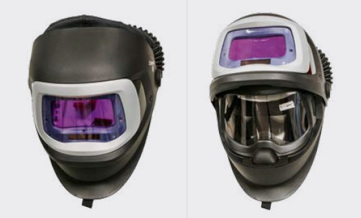

Typische Augengefährdungen beim Lichtbogenschweißen entstehen durch Funken- und Partikelflug während des Schweißprozesses, das Abplatzen von Schlacketeilchen während und nach dem Schweißen sowie durch Schleifarbeiten bei der Nahtvor- und Nahtnachbearbeitung. Besonders kritisch sind diese Gefährdungen zu betrachten, wenn in Zwangslage, z. B. Überkopfposition, oder im engen Raum gearbeitet werden muss. Aber nicht nur Schweißfachkräfte sind den Gefährdungen ausgesetzt. Betroffen sind ebenso Beschäftigte in der Arbeitsumgebung (z. B. Helfer/Helferinnen, Beschäftigte benachbarter Arbeitsplätze).
Die beschriebenen Arbeiten sind grundsätzlich nur mit Augenschutz auszuführen. Üblicherweise werden als persönliche Schutzausrüstung Schutzbrillen getragen. Bei Schweißarbeiten bieten automatisch verdunkelnde Schutzhauben mit wegschwenkbarer Filtereinheit einen guten permanenten Augen- und Gesichtsschutz. Die darunter befindliche klare Schutzscheibe ermöglicht das gefahrlose Arbeiten vor und nach dem Schweißen, ohne den Helm abnehmen zu müssen (siehe Abb. 10-1). Nach Wegschwenken des Schweißschutzfilters bietet die Klarsichtscheibe weiterhin Augenschutz vor mechanischen Gefährdungen.

Abb. 10-1 Flexibler Augen- und Gesichtsschutz mit automatisch verdunkelndem Schweißfilter und klarem Visier
Für das Lichtbogenhandschweißen und das MIG/MAG-Schweißen sind auch handgehaltene Schutzschirme einsetzbar.
Beim MIG/MAG-Schweißen können durch unbeabsichtigtes Einschalten des Drahtvorschubs Stichverletzungen durch die Drahtelektrode verursacht werden. Verletzungsgefahren bestehen vor allem bei Reinigungs- und Wartungsarbeiten am Schweißbrenner. Dies kann verhindert werden, wenn vor Beginn der Arbeiten das Schweißgerät abgeschaltet wird. Stichverletzungen können auch beim Wechseln der Drahtrolle auftreten, wenn nach dem Einführen des Schweißdrahts in das Schlauchpaket und Spannen der Andruckrollen aus Zeitgründen die maximale Drahtvorschubgeschwindigkeit eingestellt wird.
Um Augen- oder Gesichtsverletzungen durch den handgeführten Schweißzusatz beim WIG-Schweißen zu vermeiden, ist das Ende des Schweißstabs umzubiegen oder durch Aufstecken eines Korkens zu sichern.